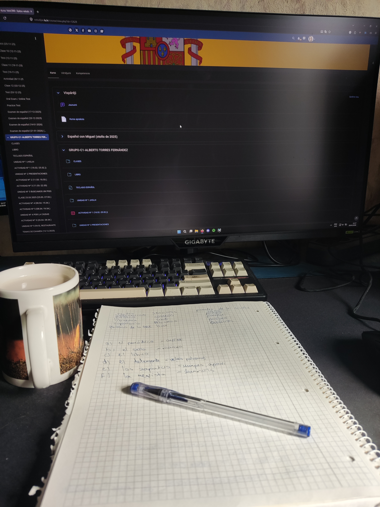
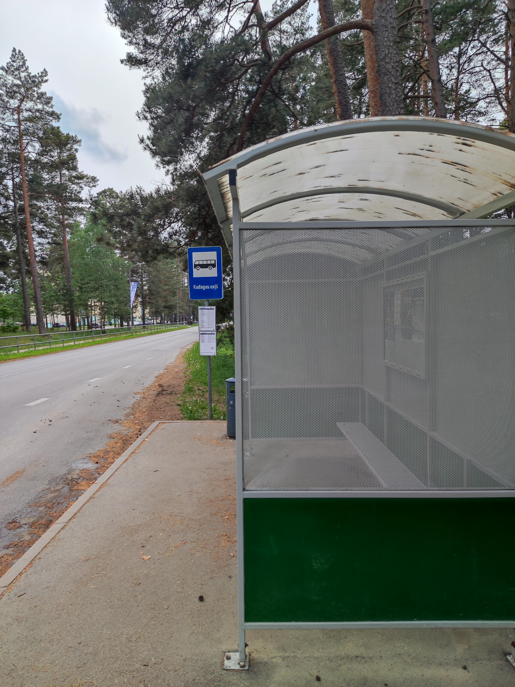
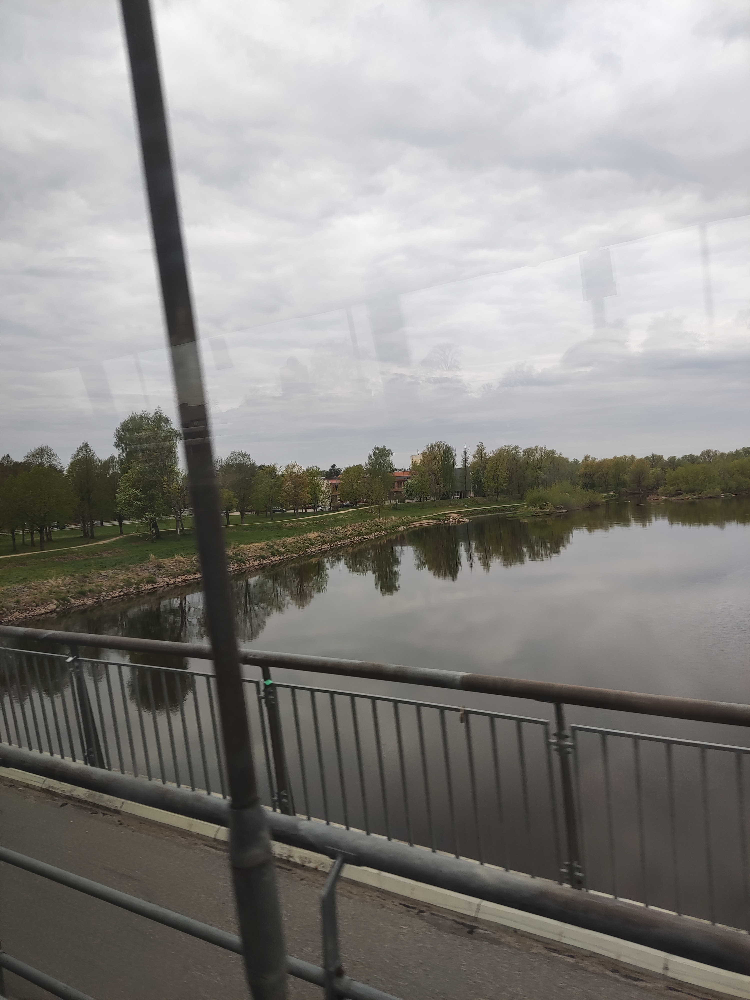
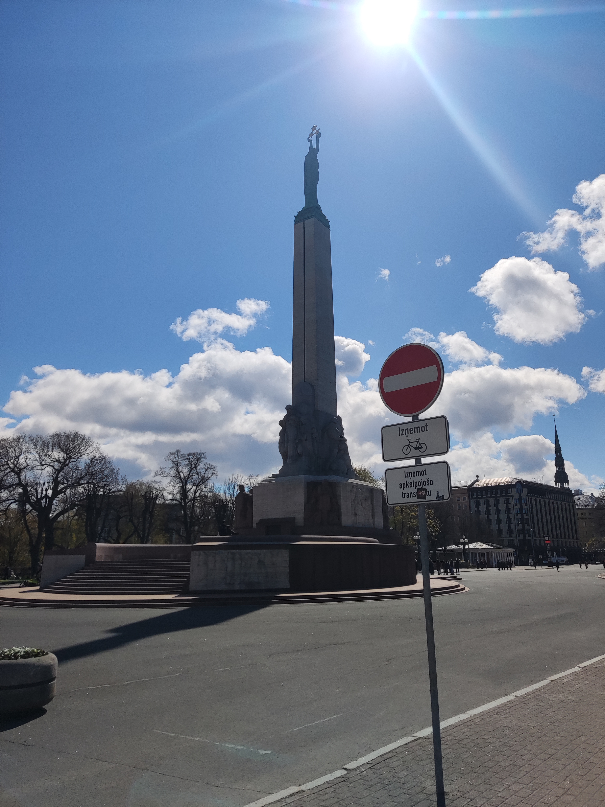
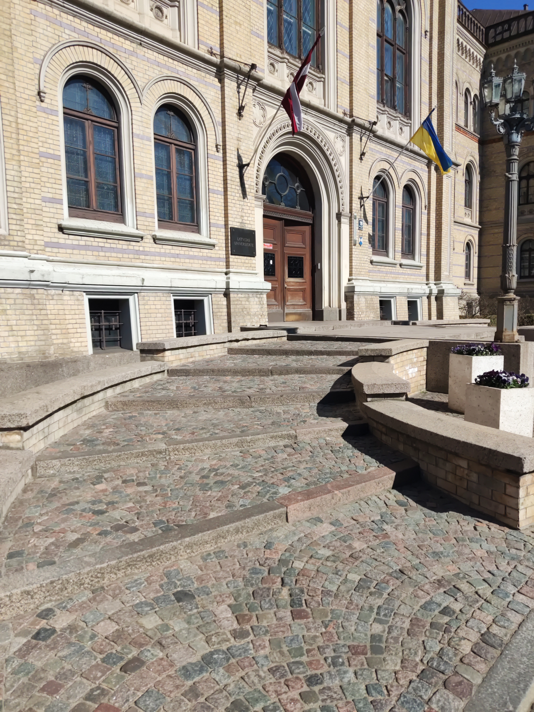

Lai sagatavotos turpmākajai dienai kafijas dzeršana ir viena no galvenajām lietām, jo doties uz universitāti bez tās nekad nav laba ideja. Protams, tas nav vienīgais ko nepieciešams izdarīt, jo dažreiz arī nepieciešams izpildīt kādu mājasdarbu, kuru bija slinkums pildīt iepriekšējā dienā. Šajā semestrī pārsvarā tie bija spāņu valodas mājasdarbi, kurus izpildīju no rīta pirms došanās uz universitāti. Ja mājasdarbu nav, tad pavadu laiku skatoties kādu YouTube video, vai dienās kad ir kontroldarbi, pārskatu visus studiju materiālus, lai tos varētu veiksmīgi uzrakstīt. Kad jau sāk tuvoties laiks, kad jāsāk doties uz autobusu, sakārtoju somu ar visu nepieciešamo, un sāku iet uz netālu esošo autobusa pieturu.

Kad esmu sagatavojies turpmākajai dienai, dodos uz autobusa pieturu, kas atrodas ļoti netālu, tikai minūtes ilgs ceļš līdz pieturai. Parasti šajā pieturā ļoti daudz cilvēku neiekāpj, izņemot agros rītos, kad autobusu gaida daudz cilvēku, kam jādodas uz darbu. Tā kā šie nav Rīgas Satiskmes autobusi, par ceļu jāmaksā autobusa šoferim, tāpēc dažreiz sanāk kādu laiku uzgaidīt, līdz autobusā var iekāpt, tā kā katram pasažierim jāizprintē biļetes. Kad esmu iekāpis autobusā un saņēmis savu biļeti, eju atrast labāko vietu, parasti autobusa aizmugurē. Sēdvietu atrast var gandrīz vienmēr tā kā iekāpju pieturā, kas ir otrā no galapunkta un vēl nav iekāpuši daudz pasažieri. Pēctam atlicis tikai gaidīt līdz nonāku Rīgā.

Ceļš autobusā ir aptuveni stundu ilgs, tāpēc laiku parasti pavadu klausoties mūziku, ja nepieciešams pārskatu kādus studiju materiālus, ja vajadzēs rakstīt kādu pārbaudes darbu. Pavadot laiku autobusā parasti arī skatos arā pa logu, skatoties, kas noticis apkārtnē, lai gan parasti viss izskatās tieši tā pat. Brauciena sākumā ir skats uz Gauju, tā kā jābrauc pāri Gaujas tiltam. Pabraucot nedaudz tālāk, pa logu var redzēt skatu uz Baltezeru - gan Lielo Baltezeru, gan Mazo Baltezeru. Tālākais ceļš ir diezgan parasts - vēlāk vienīgi vēl var redzēt Juglas ezeru. Kad ceļa laikā redzētas daudzās ūdenstilpnes, autobuss ir ieradies Rīgas apkārtnē, kur apkārt redzamas tikai daudzas dažādas celtnes.

Kad esmu ieradies Rīgā, atlicis tikai doties uz universitāti, ceļš līdz universitāties ir ļoti īss, tā kā autobusa pietura atrodas ļoti tuvu, blakus Brīvības piemineklim. Atliek tikai pāriet dažam gājēju pārejām un esmu jau nonācis līdz datorikas nodaļai. Šis semestris bija mazliet citādāks, jo bija jāizvēlās C kursi, viens no kuriem bija spāņu valodas kurss. Tāpēc, Raiņa bulvāris 19 nebija vienīgais galamērķis, reizi nedēļā arī bija jādodās uz humanitāro zinātņu fakultāti, kura atradās mazliet tālāk, tāpēc bija jāpavada mazliet ilgāks laiks, lai varētu sākt lekciju. Parasti autobuss atnāk laikā, kad nav laika darīt kaut ko citu, tāpēc parasti nonāku universitātes celtnē gandrīz tieši laikā.

Ierodoties datorikas nodaļā uzreiz dodos uz paredzēto lekciju, parasti tās notiek trešajā stāvā, dažreiz ceturtajā. Atlicis tikai atrast sēdvietu un klausīties lekciju. Parasti lekcijas ir diezgan līdzīgas, ja nepiciešams veicu pierakstus, un kad tā ir beigusies gatavojos doties atpakaļ uz autobusa pieturu, lai brauktu mājās. Mazliet citādāk bija ar spāņu valodas lekcijām, jo tajās vajadzēja aktīvi iesaistīties - pasniedzējs bieži uzdeva uzdevumus uz kuriem jāatbild, lai pārbaudītu kā mēs esam iemācījušies valodu, vai esam sapratuši konkrētās dienas tēmu. Kad viss ir izdarīts, nonāku līdz dienas beigām - dodos atpakaļ mājās un veicu šo pašu ceļu, tikai atpakaļgaitā - kad esmu nonācis atpakaļ mājās sāku gatavoties nākošajai darba dienai, vai atpūšos, ja nākošā ir brīvdiena.